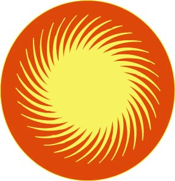
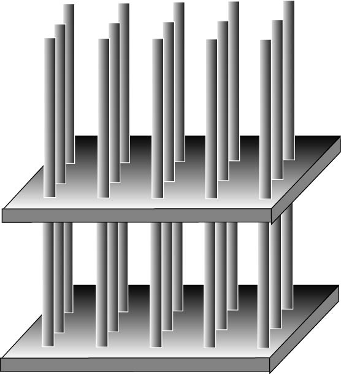

| Examples of structures | Structural optimization |
| Indicator of material's performance | Coupling |
| Indirect and distant measurements | Morphology: Adaptation of organisms |
| Dynamics, damage, and dissipation | Active materials |
| Modeling structures | Field concentration |
| Homogenization | Field in optimal structures |
| Bounds on effective properties | G-closure |
| Inverse problems | Dynamics |
| Numerical modeling | Percolation |
| Exact solutions | Fields in optimal structures |
| Conservation of effective properties | Multiphase optimal mixtures |
| Iterative homogenization | Algebra of extreme structures |
There are surprisingly many types of structures, whose effective properties
can be analytically computed or approximated. The galleries of such structures
and a theoretical background to the calculation of their properties
can be seen below.
|
|
 |
 |
(some day, these galleries will be interactive!)